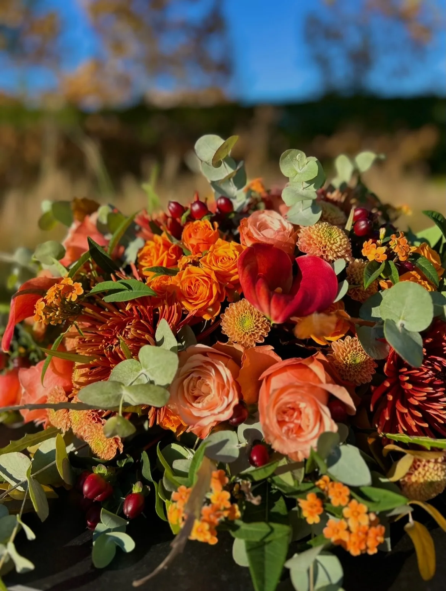
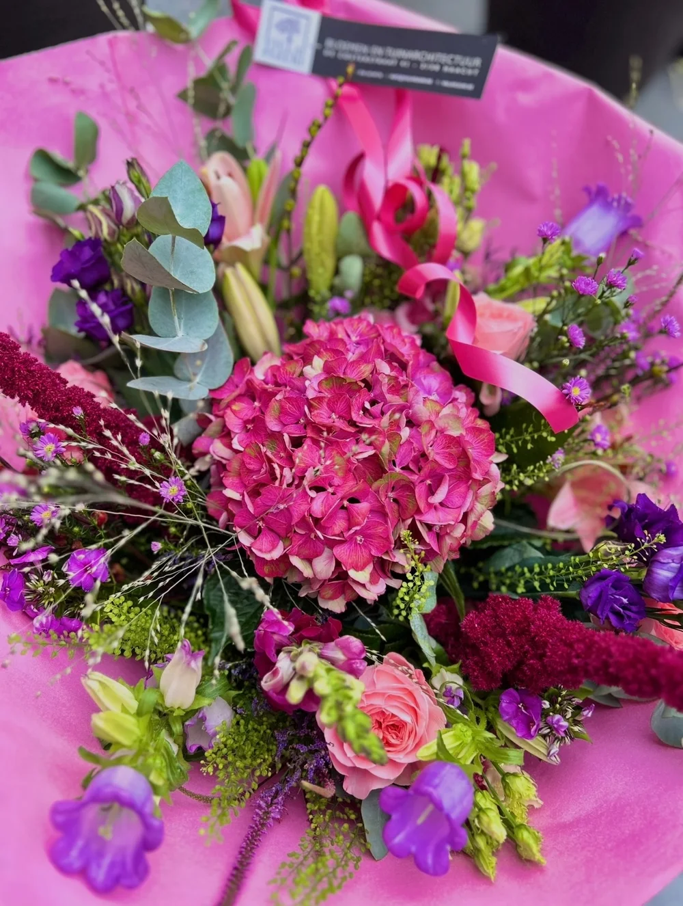
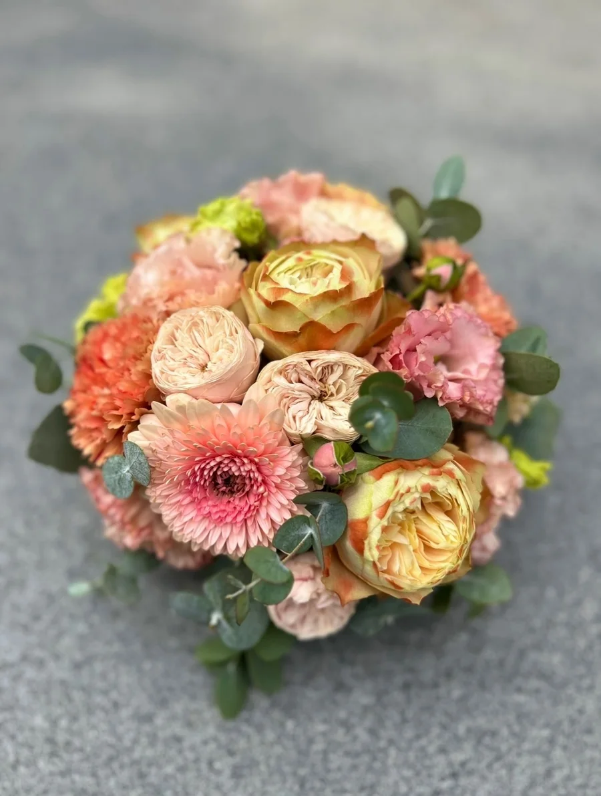
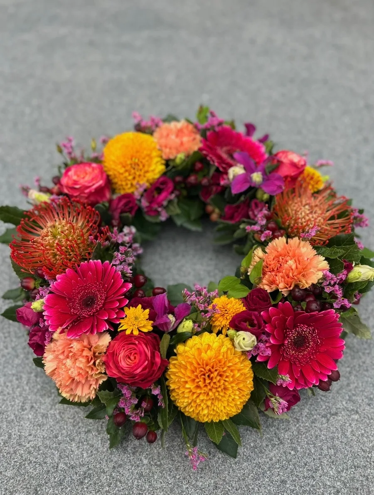
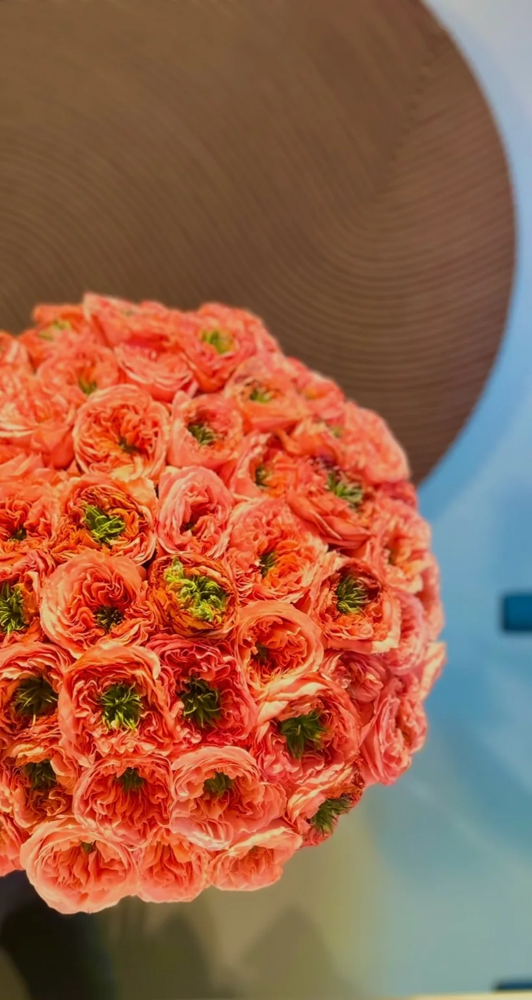

Van boeket tot tuin.
In onze winkel in Wespelaar binden we boeketten en bloemstukken met de beste bloemen van het seizoen. Buiten tekenen we tuinen, leggen ze aan en houden ze mooi.
Zeg ons waarvoor, wij kiezen de bloemen.
Een verjaardag, een trouwdag, een afscheid of gewoon omdat het donderdag is. Alles wordt hier in de winkel gebonden, met wat het seizoen op dat moment op zijn mooist brengt.
Wat we voor je maken
- BoekettenKlassiek handgebonden of net modern. Om zelf mee te nemen of om te geven.
- BruidswerkAls je gaat trouwen, wil je een bruidsboeket dat bij je past. Daar nemen we samen de tijd voor.
- Bloemstukken op maatVoor een feest, een jubileum of voor op tafel thuis.
- Graf- en rouwwerkVoor het afscheid of een bezoek aan het graf. Met zorg en zonder drukte.






Altijd verse bloemen staan, zonder dat je eraan moet denken.
Met een abonnement zorgen wij ervoor. Voor bedrijven en voor particulieren, en altijd afgestemd op de stijl van je zaak of je woning. Hoe vaak en hoe groot, dat bekijken we samen.
- 01Op de balie
- 02In de inkomhal
- 03Op de vergadertafel
- 04In je winkel
Een goed begin is het halve werk.
Dat geldt ook voor een tuin. Een ontwerp is een samensmelting van jouw wensen en onze ideeën, met één doel: zo veel mogelijk genieten en zo weinig mogelijk onderhoud.
We tekenen het plan, leggen de tuin zelf aan en komen nadien terug om hem te onderhouden.


Een doordacht plan is de basis van een stijlvolle, verzorgde tuin. We vertrekken van hoe jij buiten wil leven.
Van terras en paden tot de laatste plant: we zetten het ontwerp om in een echte tuin.
Een tuin moet op de juiste manier onderhouden worden. Wij doen dat, zodat hij elk seizoen goed oogt.

Meer dan bloemen alleen.
We werken met de beste bloemen van het seizoen. De accessoires zoeken we zelf op beurzen in binnen- en buitenland, dus je vindt hier dingen die niet in elke winkel staan.
- Vazen en schalen
- Zijden bloemen en planten
- Kaarsen en geurkaarsen
- Potten voor binnen en buiten
- Planten
- Gelimiteerde kunstobjecten
Ook voor buiten: een blikvanger aan de oprit of naast de voordeur. Kom kijken wat er staat, de collectie wisselt.
Katia Humbletop Google"Hier worden prachtige boeketten gemaakt. Hele vriendelijke eigenaars en vooral uiterst verse bloemen die zéér lang houden."
Nanou Uyttebroeckop Google"Prachtige boeketten en mooie winkel, zeer vriendelijk personeel met veel kennis van het vak!"
Hilda van Meenselop villafleuri.be"De kwaliteit van de bloemen en planten en de vriendelijkheid van de mensen die u met raad en daad bijstaan!"
Kom gerust binnen.
Voor een boeket dat je meteen meeneemt, of voor een babbel over je trouwdag, een abonnement of je tuin. Bel gerust even op voor een groter stuk.
- Dinsdag tot vrijdag
- 9u30 tot 18u
- Zaterdag
- 9u tot 18u
- Zondag en maandag
- gesloten
De Costerstraat 41, 3150 Wespelaar (Haacht)016 60 49 76 · info@villafleuri.be